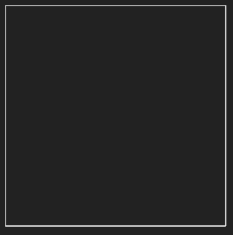
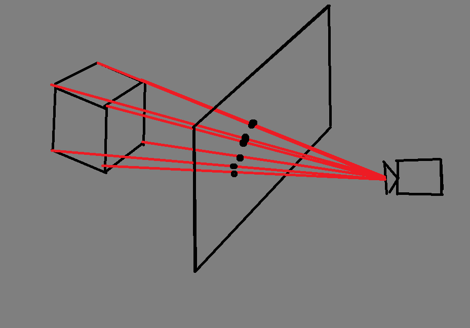
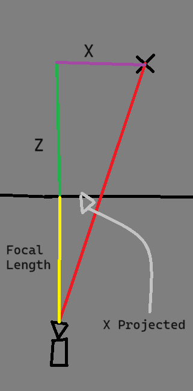
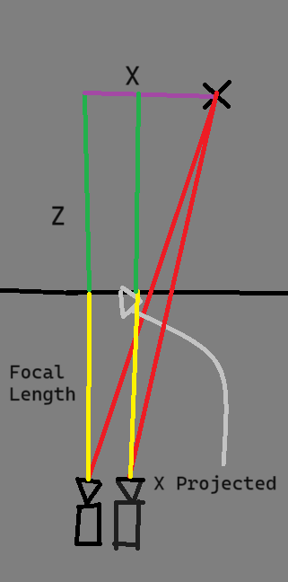

TL;DR:
Source Code (demo is in index.html and script.js)
Demo
Ever wondered how a three-dimensional object gets displayed to a two-dimensional computer screen? As it turns out, it's very simple. All it takes is some basic geometry. No WebGL or GPU needed, it works perfectly with an HTML/CSS/JS canvas.
First
of all, let's create the canvas we'll be drawing on. Let's set up a quick HTML page:
<!DOCTYPE html>
<html lang="en">
<head>
<meta charset="UTF-8">
<meta name="viewport" content="width=device-width, initial-scale=1.0">
<title>3D -> 2D Projection</title>
<style>
body {
background-color: #222;
overflow: hidden;
}
</style>
</head>
<body>
<canvas id="canvas"></canvas>
<script src="script.js"></script>
</body>
</html>
We can now start coding script.js. Here's the code for connecting to the canvas:
const canvas = document.querySelector("#canvas");
const context = canvas.getContext("2d");
canvas.width = window.innerWidth;
canvas.height = window.innerHeight - 250;
const X_CENTER = canvas.width/2;
const Y_CENTER = canvas.height/2;
context.fillStyle = "black";
context.strokeStyle = "white";Here, we attach our variable
canvas to the canvas object in our HTML. Next, we define our context (usually either "2d" or "webgl") to tell our canvas we want to make it two-dimensional.
We then set the canvas' width to the width of the screen, and our height to the extent of the screen (minus a few hundred pixels for the sliders we'll add later). We'll set some variables to the center of our x and y axes, which will come
in handly later when we want to center our cube. Lastly, we'll make it so that the lines we draw are white. Now we can get to the math. We define our vertices (in the format [x, y, z]) with this code: let VERTICES = [
[0, 0, 30],
[0, 300, 30],
[300, 0, 30],
[300, 300, 30],
[0, 0, 60],
[0, 300, 60],
[300, 0, 60],
[300, 300, 60],
];
let INDICES = [
[0, 1],
[1, 3],
[3, 2],
[2, 0],
[4, 5],
[5, 7],
[7, 6],
[6, 4],
[0, 4],
[1, 5],
[3, 7],
[2, 6],
];
var projectedVertices = [];
function updateCanvas() {
projectedVertices = [];
context.clearRect(0,0,canvas.width,canvas.height);
for (vertex of VERTICES) {
let onScreenCoordinate = [0,0];
onScreenCoordinate[0] = vertex[0];
onScreenCoordinate[1] = vertex[1];
projectedVertices.push(onScreenCoordinate);
}
for (let [startCoordinate, endCoordinate] of INDICES) {
context.beginPath();
context.moveTo(projectedVertices[startCoordinate][0], projectedVertices[startCoordinate][1]);
context.lineTo(projectedVertices[endCoordinate][0], projectedVertices[endCoordinate][1]);
context.stroke();
}
}
updateCanvas();- The first four vertices (z=30) are the square in the front. The last four have the same coordinates, but are adjusted to be 30 behind. (Note that 30 doesn't have a measurement; the number of pixels the back four are actually behind the front four will vary as we change the camera's perspective.)
- We then define our indices, which tell is which vertices connect to which other vertices by a line. (Usually, you just have a list of numbers that you can index into the vertices through and connect like a connect the dots puzzle, but
for our purposes, it's much easier if we can define every individual line instead of one long chain of lines.) So for example, our first item in
INDICESis [0,1]. This effectively tells our code that we should draw a line between vertex 0 and vertex 1, or whatever is made of vertex 0 and 1 once we project them onto the screen. - We 'll store these projected coordinates in our array,
projectedVertices. - We clear the canvas, so that our last cube isn't shown.
- Next comes our function
updateCanvas(), which is called at the start of our code. We'll change it later so that it is also called once we change an input. - First of all, we need to turn those three-dimensional vertices into two dimensions. For now, we 'll just ignore the z-axis to transform the coordinates into 2D. After we've done this transformation to each and every vertex, we should
get an array,
projectedVertices, with coordinates that are formatted like this:[x,y]. - Finally, we take those coordinates and draw lines connecting them based off of our INDICES.
If you've done everything right, you should see a flat, white square, as seen below:

That square is great, but it doesn't appear very 3D to me. In fact, it looks as if somebody just magically took away the third dimension from that cube. Luckily, we have some handy geometry to help us incorporate that third dimension into our calculations.
So let's imagine that we're holding a camera at our cube, and between that camera and the actual, 3D locations of those vertices is a flat screen. The way we calculate where those vertices shuold appear on screen is by drawing a magical line from the camera to a vertex, and then seeing where that line intersects the screen. Here's a crude visualization:

Furthermore, we can isolate just a single axis (x or y, specifically) to focus on the math. So here is a small mockup of calculating just the x axis for a vertex:

If you look closely, you can see that there are two right triangles, one between the camera and the screen, and one between the camera and the original vertex. These two triangles are similar, which means that they are just scaled up/down version of the other. This means that each edge of the triangle can be represented as a fraction of the other edge.
$${xProjected \over x} = {focalLength \over focalLength + z} $$
Using simple algebra, we can multiply both sides by x, to get the equation:
$$xProjected = {focalLength * x \over focalLength + z} $$
The great news is, that's it! No more math necessary. To get the y-coordinates, all we need to do is replace the x's for y's. So let's do that. Inside of our
updateCanvas() function, we can declare a new variable focalLength to hold that value.var focalLength = 5;We have to change the way our function calculates the coordinates now to account for our new equation, which would look like this:
for (vertex of VERTICES) {
let onScreenCoordinate = [0, 0];
onScreenCoordinate[0] = (focalLength * vertex[0]) / (focalLength + vertex[2]);
onScreenCoordinate[1] = (focalLength * vertex[1]) / (focalLength + vertex[2]);
projectedVertices.push(onScreenCoordinate);
}One thing that we should be able to change, though, is the focal length, or the length between the camera and the screen. In order to be able to change that manually, let's add a slider to our HTML. Quickly borrowing some code from w3schools, here's some html to put after our
canvas tag:<div class="slidecontainer">
<p>Focal Length</p>
<input type="range" min="0" max="200" value="20" step="0.05" class=" slider " id="focal" oninput="updateCanvas() ">
</div>And some CSS to add to our
style tag:.slider {
-webkit-appearance: none;
width: 100%;
height: 15px;
border-radius: 5px;
background: #d3d3d3;
outline: none;
opacity: 0.7;
-webkit-transition: .2s;
transition: opacity .2s;
}
.slider::-webkit-slider-thumb {
-webkit-appearance: none;
appearance: none;
width: 25px;
height: 25px;
border-radius: 50%;
background: #04AA6D;
cursor: pointer;
}
.slider::-moz-range-thumb {
width: 25px;
height: 25px;
border-radius: 50%;
background: #04AA6D;
cursor: pointer;
}
p {
color: white;
font-family: sans-serif, monospace
}Finally, let's make sure that we receive input from our slider in our Javascript code.
let focalLength = parseFloat(document.querySelector("#focal").value)After all of that, you should now see a square inside of another scaling up alongside it.
As a final touch, let's change the position of the camera. So far, we have assumed that the camera will always be at [0,0]. To make this look a lot more lifelike, we can change our perspective on the cube.
To account for the camera's position, let's visualize our triangles scene again. Where does the camera's position fit into our equation?

The only variable that changes when we shift the camera is the original x value. That means we can represent our new equation like so:
$$xProjected = {focalLength * (x - cameraX) \over focalLength + z} $$
Let's add some more sliders quickly for our camera X and camera Y (note: camera Z is just our focal length, basically)
<div class="slidecontainer">
<p>Camera X</p>
<input type="range" min="-400" max="400" value="5" step="0.05" class=" slider " id="cx" oninput="updateCanvas() ">
</div>
<div class="slidecontainer">
<p>Camera Y</p>
<input type="range" min="-400" max="400" value="5" step="0.05" class=" slider " id="cy" oninput="updateCanvas() ">
</div>And read the values from the sliders like this:
onScreenCoordinate[0] = (focalLength * (vertex[0] - cameraX)) / (focalLength + vertex[2]) + X_CENTER;
onScreenCoordinate[1] = (focalLength * (vertex[1] - cameraY)) / (focalLength + vertex[2]) + Y_CENTER;That was a handful. But now we have a beautiful display of a 3D cube that we can manipulate, with just a bit of intuitive math.
Closing Notes
This was a really fun project, but alas, it could always be better. One addition that I recommend you challenge yourself with is to add colors to the faces of the cube. This could be done by looping over every pixel of the screen and finding which two points it lies between.
Again, for those who need to see it to believe it:
Source Code (demo is in index.html and script.js)
Demo